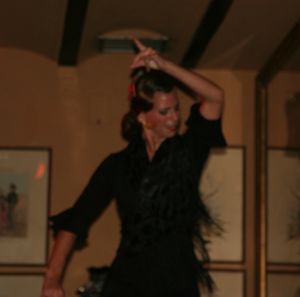
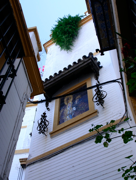
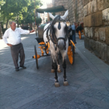
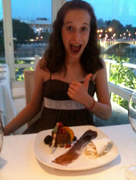

SEVILLE

A City of Romance
Wednesday, June 30
Today we checked out of our room and made our way to the train station to catch the 11:34 train to Sevilla. It was so simple to figure things out, and a very comfortable ride. Why doesn’t the US have such a comprehensive, high-speed rail system???
We checked into the Hotel Amadeus, which is a small (15 rooms) inn decorated with all sorts of musical instruments that guests are allowed to play. Our room was large (king bed, big armoire,
PHOTOS
Large
Flamenco!
Top
Alcazar Gardens
2nd
Typical building facade
3rd
Great way to see the city
4th
Claire with desserts!
OUR FAVORITES
Restaurant
Rio Grande
Sight
The Alcazar gardens
Experience
Learning about flamenco dancing and music
Memory
Getting lost (again and again) because we couldn’t read the small font on the map!





pull out sofa for Claire) and had a tub at one end! The toilet and bidet were in 2 separate rooms with a shower in the middle. Thank goodness for AC in the room because the public areas were HOT.
We decided to venture out to the flamenco museum. Well let’s just say this about that – the streets of Sevilla are like a maze, and even though we had a map, the print was too small for 50-something people! We wandered round and round but finally found it – and it was only OK because half the interactive exhibits actually worked. So then we were hungry and headed out around 5:00 for a bite to eat, which turned out to be NUTS because it was sweltering and that’s when the kitchens shut down (usually between 4:00 and 8:00) so the waiter at the first place we went to (which was suggested by the receptionist at the hotel) looked at us like we were crazy (or from America – take your pick). He directed us to another place around the corner which was pretty much a smoky neighborhood beer joint, but hey – at least it was cool and had food.
So back to the hotel for a siesta (and a shower) before going for to a flamenco show (at El Arenal)! We sat behind a family from Arizona with 2 teenagers. The show was fun, although George thought one of the singers sounded much like an old man with a horrible toothache. (The dancing and costumes more than made up for it, but paying $6.50 for a watered down diet Coke didn’t go over too well with Karen.)
Off we went around (and around) to find dinner (which was really just about 2 blocks away) at Enrique Becerra, where the food was good (refreshing salad and a kind of fried pork roll for Karen, veal for George, and gazpacho with toppings (and lots of white bread!) for Claire). But our waiter was TERRIBLE…good thing there was a young guy there to pick up the slack!
Thursday, July 1
This morning at 10:00 we met our guide Raquel (who also goes by Rachel) to tour the old quarter of Sevilla. We went to the Jewish quarter, the Alcazar, including its huge, magnificent gardens (many styles, where we heard lots of morning doves and saw a peacock!), and the Cathedral (massive in size – the 3rd largest in Europe!), and then climbed Giralda tower to the top (35 ramps!) to see the city from above.
We went to lunch at a place recommended by Raquel (Casa Roman in the Venerables square) where the gazpacho was good and the air conditioning was such a relief from the heat. (Sevilla turned out to be the hottest place we visited by a long shot!)
For dinner, we decided on Rio Grande, which we thought was going to be quite touristy, based on its ads and its location on the river, but the food was excellent (tuna for Claire, salmon raviolis and pork roll up elegantly with sundried tomatoes and roasted onions for Karen, goat cheese salad with foie and sea bass for George, and then 2 amazing desserts – see photos!) Despite the good food, Claire was pestered by a fly and was intrigued by 2 salamanders outside the window on the wall while Karen was going bonkers over 2 French fries left on the floor!